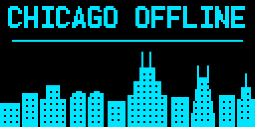
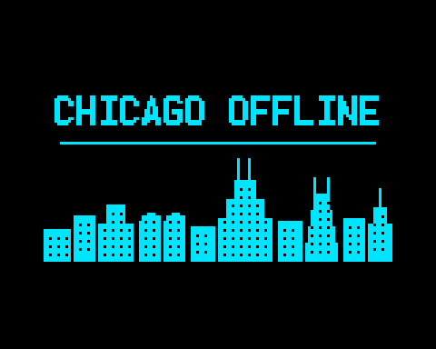
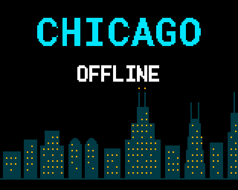

The animated boot screen
Nothing on this page has been on a radio yet. The patch applies cleanly to the stock release source and that is all I can honestly claim for it so far. There is no firmware download here, because I have not built one. Read the last section before you use any of this.
The boot screen is three seconds you will see a few thousand times. That seems like a reasonable place to put a skyline.
I wanted a scrolling Chicago skyline at power-on. What I got first was an education in what the boot screen actually is, because two things in the source quietly rule out the obvious approach.
The codeplug boot image cannot animate
OpenGD77 already lets you put a picture on the boot screen through the
codeplug, which sounds like the easy route. It is not, because the splash
screen has no animation loop. uiSplashScreen() calls
updateScreen() exactly once, on isFirstRun, and
after that handleEvent() only ever redraws on an explicit
redraw event. There is no tick, no frame counter, nothing to hang motion on.
One frame, and then it waits to exit.
So any animation means changing firmware. That is worth knowing before you spend an evening drawing frames.
And that image is 128×64 and one bit — even in colour
This one surprised me. The MD-UV380 has a 160×128 colour screen, but the
codeplug boot image is still the old monochrome GD77 format, blitted into the
middle of it by displayConvertGD77ImageData():
const uint32_t startOffset = (32 * DISPLAY_SIZE_X) + (DISPLAY_SIZE_X - 128) / 2;1024 bytes, 128 columns by 8 pages. It lands on rows 32 to 95 and columns 16 to 143, so roughly half the screen is dead border, and the whole thing is two colours taken from the splash theme items. There is no way to use the rest of the panel without touching firmware, because that offset is computed rather than configured.
The polarity is backwards from what you would guess. A set bit paints the background:
screenBuf[...] = ((d >> r) & 0x01) ? backgroundColour : foregroundColour;Pack your image the intuitive way and you get a perfect negative.
The version that needs no firmware
Since that path is static and monochrome anyway, I drew for it directly rather than down-converting something richer. Title on one line, skyline underneath, windows punched out of the silhouette as holes — in one bit there is no such thing as a lit window, only building and not-building.


CHICAGO OFFLINE in the 8×16 font is 120 pixels of the 128
available. One more character and it clips, because the text routine
truncates at the edge rather than wrapping.
Here is the packed file if you want it on your own radio: chicago-boot-128x64.bin — exactly 1024 bytes, correct polarity, upload it as the codeplug boot image. No firmware involved.
The animated one

Willis and Hancock are the two that survive this few pixels — stepped with twin antennas, and tapered with twin antennas, are distinct enough to read. Marina City is in there for rhythm, but at nine pixels wide nobody is going to name it.
No new setting
My first draft added a menu toggle, which was wrong twice over.
There is already a boot screen control, and it lives in the codeplug:
const int CODEPLUG_ADDR_BOOT_INTRO_SCREEN = 0x7518;// 0x01 = Chars 0x00 = Picture
That is the CPS Intro Screen field. The firmware only ever
reads it — there is no writer anywhere in the tree — and its one
consumer is the bootScreenType == 0 test in the splash screen.
The other reason is that settings bits are nearly gone. The last usable bit is 29, and the mods on this site already claim three of the spares. Spending the last free one on something you look at for three seconds is a bad trade.
So this mod adds no setting at all. It replaces exactly one upstream
dead-end: you chose Picture, but there is no picture stored, so
stock firmware falls back to printing the word OpenGD77 and your
two boot lines. That specific case now gets the skyline instead:
bootAnimActive = ((bootScreenType == 0) && (customDataHasImage == false));Your own boot lines are kept and drawn above the animation. Choose Chars in the CPS, or store a real picture, and none of this code runs. The switch already existed; I just hung something on the empty branch.
How it draws
The skyline is a 240×56 bitmap stored column-major in 8-pixel pages — the same layout the OpenGD77 fonts use, so indexing is a couple of shifts and no division:
uint8_t d = chioffSkylineBitmap[(((y >> 3) * CHIOFF_SKYLINE_W) + sx)];
buf[...] = (((d >> (y & 0x07)) & 0x01) ? fgColour : bgColour);That is 1680 bytes of flash. The strip is tileable — the last column joins back to the first — so scrolling is just a modulo on the offset and there is no seam to hide.
Motion comes from the timer the splash screen already uses for its PIN prompt:
(void)addTimerCallback(bootAnimTick, BOOT_ANIM_FRAME_MS, UI_SPLASH_SCREEN, false);Each tick advances the offset, redraws the band and re-arms itself. The band starts at row 64, which is deliberately a multiple of eight so only the skyline rows get pushed to the panel:
displayRenderRows((BOOT_ANIM_BAND_TOP / 8), ((BOOT_ANIM_BAND_TOP + CHIOFF_SKYLINE_H) / 8));The title text above the band is drawn once and never touched again. The callback also bails out if the current menu is no longer the splash screen, so it cannot keep firing into a screen that has moved on.
How long it runs
The animation has no duration of its own. The splash screen exits when the boot melody finishes or when any key is pressed, so the melody is the budget. A longer custom melody gives you a longer skyline, which means the length is tunable from the codeplug even though the animation lives in firmware.
A zero-length boot melody makes the splash screen call
exitSplashScreen() immediately and skip the whole thing. If
you have silenced your boot tone, you will never see this.
One thing that cost us an evening
To lay this out properly I wanted to render the real OpenGD77 fonts on a
desktop rather than guess at spacing, so I parsed the glyph tables straight
out of HX8353E_charset.h. The first render came out as clean,
well-formed, completely wrong letters — W9CHI drew as
V8BGH.
Every glyph row in that file carries a trailing comment like
// [ 33] '!', and the number scraper was eating those ASCII
codes as pixel data. One spurious byte per row, so the table drifted further
out of alignment with every character. Strip C comments before parsing and
all five fonts land on their exact expected byte counts.
Get the patch
chioff-boot-animation.patch
— a plain unified diff against the OpenGD77 R20260131
release source. Two files, 260 lines added, three removed, nothing binary in
it. One of those files is the generated skyline header.
git apply --3way chioff-boot-animation.patch
It touches uiSplashScreen.c and adds
chioffSkyline.h. No settings, no menus, no language strings, and
nothing in the RF or codec paths.
Want a different skyline? tools/gen_skyline.py generates the header from a table of buildings. Edit the table, re-run it, rebuild.
What is not done
I have not built this and I have not flashed it. I could not get a radio connected the evening I wrote it, and I would rather publish the patch with that said plainly than sit on it or imply a test that did not happen.
What I can claim: the patch applies cleanly to a pristine
R20260131 checkout, verified with git apply --check,
and every firmware function it calls was read out of the release source
rather than assumed. What I cannot claim: that it compiles, that the timing
looks good on a real panel, or that 90 ms a frame is the right speed. The
1-bit image above is the part that is genuinely ready to use today.
Firmware and screen captures will go here once a radio cooperates.